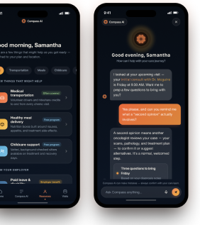
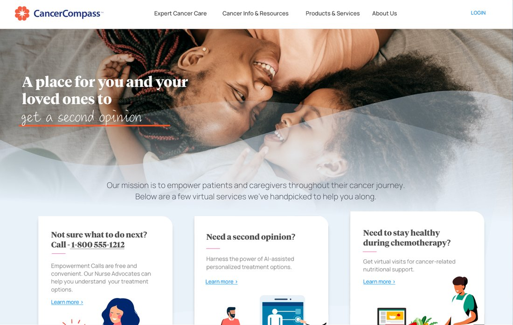
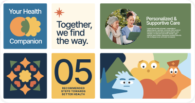
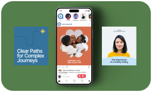

Selected Work
CancerCompass
The Problem
Cancer patients face fragmented supportive care, symptom management, care navigation, emotional support, and practical needs like transportation or childcare, scattered across disconnected channels and often invisible until a crisis forces the question. One patient canceled a chemo appointment simply because she didn’t know transportation assistance existed. Research surfaced the same pattern again and again: patients weren’t just short on information, they were short on timely, trustworthy information, appointments moved too fast to absorb, and the biggest questions always came up later, at home, with nowhere reliable to take them. Clinical teams had no scalable way to close that gap between visits.
My Role & Impact
Owned product strategy, design, and roadmap from concept through MVP as Executive Director. Led patient research and clinical-expert workshops to translate clinical complexity into an intuitive patient experience. Aligned engineering, clinical operations, and executive leadership; partnered with internal data scientists and technical leads on AI model integration, care-pathway logic, and Epic-native implementation.
Managed the outside brand designer and animation partner who built CancerCompass’s visual identity, while I directed the brand strategy and where that identity showed up across the product.

Metrics & Outcomes
Research depth and go-to-market groundwork: 25+ patient/caregiver interviews and 20+ hours of clinical observation completed, two rounds of prototypes (usability/stakeholder alignment, then AI-integration validation), 20+ pieces of patient education content in development, 3+ ongoing strategic partnership conversations, and a filed USPTO trademark for the CancerCompass name and brand.
Navigating Roadblocks
The roadmap went through repeated pauses and pivots. Part of the job was managing internal and external relationships carefully enough to keep everyone aligned without burning bridges, and steering the team through sustained ambiguity — a project like this rarely moves in a straight line, and the leadership work was as much about the pauses as the progress.


